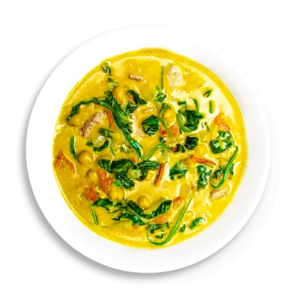

Green Curry

Savory and spicy dish with hints of basil and lime
The name "green" curry derives from the color of the dish, which comes from green chillies. The "sweet" in the Thai name (wan means 'sweet') refers to the particular color green itself and not to the taste of the curry. As this is a Thai curry based on coconut milk and fresh green chillies, the color comes out creamy mild green or, as this color is called in Thai, "sweet green".
Its ingredients are not exactly fixed. The curry is not necessarily sweeter than other Thai curries but, although the spiciness varies, it tends to be more pungent than the milder red curries.[3] Green curry evolved during the reign of King Rama VI or Rama VII, between the years 1908-1926.
Ingredients
- Thai basil
- shoots, canned
- Red bell pepper
- Green curry paste, store bought or homemade
- Makrut lime leaves
- Full fat coconut milk
- Fish sauce
- Palm sugar (sub granulated or light brown sugar)
- Boneless skinless chicken thighs
- Chicken stock, unsalted
Instructions
- Optional step: Pound green curry paste and Thai basil leaves for an extra vibrant colour.
- Get the paste as fine as possible.
- Reduce the coconut milk until very thick
- Add the curry paste and saute for a few minutes.
- Toss chicken with the curry paste.
- Add coconut milk
- Add chicken stock
- Add makrut lime leaves.
- Add fish sauce and palm sugar.
- Simmer for 10-15 minutes until the chicken is fork tender.
- Add bamboo shoots and cook for a minute until the curry comes back to a boil.
- Stir in red bell pepper and turn off the heat.
- Add Thai basil and stir just until wilted.
- The green curry is now ready to serve with jasmine rice!